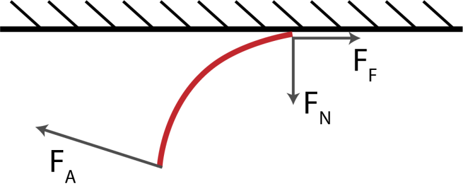
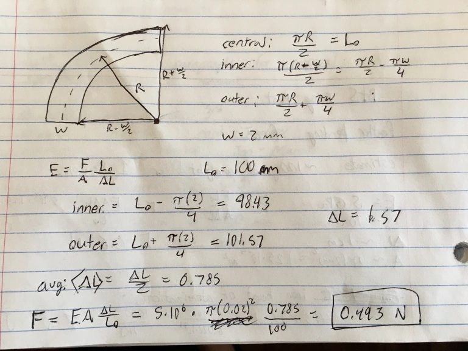

One of my favorite songs is Randy Described Eternity by Built to Spill. The lyrics describe the lead singer's experience of being in a church youth group and having the youth pastor, Randy, explain the concept of eternity, presumably to scare the group about the possibility of spending an eternity in hell. The lyrics go like this:
Every thousand years
This metal sphere
Ten times the size of Jupiter
Floats just a few yards past the earth
You climb on your roof
And take a swipe at it
With a single feather
Hit it once every thousand years
'Til you've worn it down
To the size of a pea
Yeah, I'd say that's a long time
But it's only half a blink
In the place you're gonna be
So using that description, lets see if we can calculate just how long eternity is, according to Randy. We'll need to use a bit of physics here just to figure out how much the size of the sphere is reduced with each swipe of the feather, the rest is straightforward arithmetic.
Approach to the Problem
Lets assume that the metal sphere described in the song is made of iron. What we need to do is figure out the amount of energy needed to remove an iron atom from an iron lattice, then see how much energy is imparted to the metal by the swiping of the feather, then we can determine how much iron can be removed by each swipe. If we calculate how many atoms are in the sphere, we will then know how many swipes it takes to remove all of the atoms. Then we just multiply this number by 1,000 years, and we'll have an estimate for how long eternity is!
Energy Needed to Remove all of the Iron Atoms
When you have atoms in a crystal lattice, like you do with metallic iron, it takes energy to remove an atom from that lattice, since you need to break all of the bonds between that atom and its neighbors. You could probably use density functional theory to meticulously calculate the height of this energy barrier, but we can just use the short cut of thermodynamics! Iron has a heat of atomization of 415 kJ/mol, which means it takes about $7 \times 10^{-19}$ joules to remove a single iron atom from its lattice.
This seems like a tiny amount of energy, but it's actually quite a lot at the atomic scale. And that's the energy for just a single atom, we need to multiply this energy by the total number of atoms in the sphere, which is A LOT. Lets assume that when the lyrics say "10 times the size of Jupiter", size is referring to the volume rather than to the radius or cross-sectional area. The volume of Jupiter is $1.43 \times 10^{24}$ cubic meters, so the sphere described in the song has a volume of $1.43 \times 10^{25}$ cubic meters. Iron has a density of 7.874 g/cm3 and an atomic mass of $9.3 \times 10^{-23}$ g. We can now figure out how many iron atoms are in the sphere, first calculating the mass of the sphere ($m_s$) by multiplying the density ($\rho$) by the volume ($V$), then dividing by the atomic mass of iron ($m_{atom}$):
# of atoms $=\frac{m_s}{m_{atom}} = \frac{\rho V}{m_{atom}}$
# of atoms $ = \frac{7.874\times 10^6 \text{ g/m}^3 \cdot 1.43\times10^{24} \text{m}^3}{9.273\times10^{-23} \text{g}}$
# of atoms $ = 1.2\times 10^{53}$
The Energy Imparted by a Feather Swipe
Now lets think about how much energy is imparted by the feather with each swipe. My approach here will be to think about the heat generated by the friction between the feather and the metal. I'll also need to make the enormously simplifying (and obviously not entirely valid) assumption that all of that heat goes towards atomizing iron atoms and doesn't get conducted through the lattice. Lets draw a simple force diagram to think about the situation more clearly:
Force diagram showing the feather (red) being swiped across the surface of a large metal sphere (black). FA is the applied force, FN is the normal force, and FF is the force of friction.
What we'd like to find is the force of friction, FF, which we can then integrate over some distance, d, to find the energy imparted by the swiping feather. FF depends on FN according to $F_F = \mu F_N$, where $\mu$ is the coefficient of friction between feather and iron. I tried to find a value for $\mu$ by searching online, but couldn't find it, so we'll just assume $\mu \approx 0.3$, which is similar to the coefficients between other organic materials and metals.
So now we still need to know what FN is. We can estimate it by figuring out how much force it would take to bend a feather by about 90 degrees as is shown in the diagram. For a first order-of-magnitude estimate, lets just think intuitively about how much weight we think a feather could support before bending significantly. If we imagine balancing a paperclip on the tip of a feather, it seems like it should definitely be able to support that weight. It could probably support 10 paperclips quite easily as well. But I imagine that if we tried to balance 100 paperclips on the tip of a feather, it would probably start to bend quite a bit. If we assume a paperclip weighs about 1 gram, the weight of 100 paperclips would apply around 1 newton of force.
We can be a bit more precise if we know Young's modulus for a feather, which characterizes how much a given material will stretch under an applied force. Luckily some experimental biologists have already done the difficult job of measuring this parameter in their paper Flexural stiffness of feather shafts: geometry rules over material properties. They found that Young's modulus for barn owl feathers is about $5\times 10^6$ pascals. The definition of Young's modulus (E) is:
$E = \frac{F}{A}\frac{L_0}{\Delta L}$
where A is the cross sectional area, L0 is the unstretched length, and ΔL is the change in length when stretched. If we know the width and length of the feather, as well as the angle it is bent by (90°), we can calculate ΔL and solve for the applied force, F, needed to achieve this bending. Here's what that calculation looked like:
So we see that it takes about half of a newton to bend a feather by 90°, and so we'll say that the normal force, FN, is 0.5 N, very close to our initial estimate of 1 N!
Now we can use this to find the force of friction from $F_F = \mu F_N$, and find that FF = 0.15 N, after plugging in 0.3 for μ. Now we just integrate this over the length of the swipe to get the energy, using the definition of work for a constant force acting along a straight path of length d:
$W = \int F(x) dx = F d$
Lets assume that the feather is swiped across half a meter of the sphere's surface, then the work done by the feather is $0.15 \text{ N} \times 0.5 \text{ m} = 0.075 \text{ J}$.
So How Long is an Eternity?
We have calculated that each time a feather is swiped on the surface of an iron sphere, it imparts about 0.075 joules of energy. We've also calculated that it would take about $8.3 \times 10^{34}$ joules to remove all the iron atoms from a an iron sphere that is 10x the size of jupiter. Now we just need to do some simple arithmetic to figure out how long this would take. The total number of swipes we would need to make is:
$\frac{8.3 \times 10^{34} \text{ J}}{0.075 \text{ J}} = 1.1 \times 10^{36} \text{ swipes}$
If the swipes happen once every 1000 years, then it would take $1.1 \times 10^{39}$ years to wear down the sphere to the size of a pea, an absurdly long time.
But we're not done yet! The last two lines of the first verse say "But it's only half a blink in the place you're gonna be." Which seems to imply that this huge length of time is to eternity as half a blink is to a human lifetime. A blink lasts about a tenth of a second, so half a blink would be 0.05 seconds. The average human life expectancy is about 72 years, or about 45 billion half-blinks. So we should multiply the number of years we calculated above by 45 billion, giving us a final answer of:
$(1.1 \times 10^{39}) \times (4.5 \times 10^{10}) = 5 \times 10^{49} \text{ years}$
So there we have it, according to Randy, eternity lasts about $5 \times 10^{49}$ years.
Was Randy Right?
Well, no. If we wanna be literal about it, eternity means an infinite number of years, and $10^{50}$ is just as far from infinity as 0 is. But modern cosmology tells us that the universe won't actually last infinitely long, the universe will most likely undergo a process called heat death. Eventually, all of the stars will use up their fuel, and the only thing left in the universe will be black holes. These black holes will not have anything left to suck up, so they will slowly evaporate due to Hawking radiation. Once the last black holes have evaporated, there will be nothing left in the universe except extremely low energy light. For all intents and purposes, time will stop, as the universe will have reached it's maximum entropy state. It's estimated that this will take about $10^{100}$ years, so even with this more conservative estimate, Randy was still pretty far off.